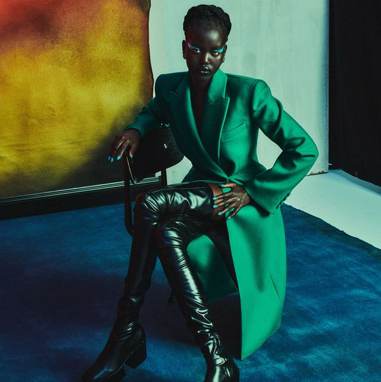

Latest Blogs
Capsule Wardrobe Essentials for Every Season
Title: Building a Stylish Foundation: Capsule Wardrobe Essentials for Every Season
In the fast-paced world of fashion, where trends come and go, the concept of a capsule wardrobe has emerged as a timeless and sustainable approach to dressing. A capsule wardrobe consists of a curated collection of versatile, high-quality pieces that can be mixed and matched to create a variety of outfits. This not only streamlines the decision-making process but also promotes a more mindful and intentional approach to fashion.The Foundation:
At the core of a capsule wardrobe are foundational pieces that seamlessly transition from season to season. Start with well-fitted, neutral-colored basics like a white T-shirt, a black sweater, a pair of dark jeans, and a classic blazer. These timeless essentials serve as the building blocks for countless outfit combinations.
Seasonal Staples:
To adapt your capsule wardrobe to different seasons, incorporate a few season-specific items. For spring and summer, consider adding a floral dress, a pair of tailored shorts, and lightweight tops. As the temperatures drop in fall and winter, bring in cozy sweaters, a stylish coat, and versatile boots. By layering and accessorizing, you can easily navigate the changing weather while maintaining a chic and cohesive look.
Versatile Accessories:
Accessories play a crucial role in elevating your capsule wardrobe. A well-chosen scarf, statement jewelry, or a stylish belt can transform a simple outfit into a fashion statement. Invest in accessories that complement your personal style and can be paired with multiple outfits, adding flair without cluttering your closet.
Quality Over Quantity:
When building a capsule wardrobe, prioritize quality over quantity. Choose well-made, durable pieces that withstand the test of time. While initial investments may seem higher, the longevity of these items pays off in the long run, both in terms of style and sustainability.
Mix and Match: The beauty of a capsule wardrobe lies in its mix-and-match potential. Experiment with different combinations of tops, bottoms, and accessories to create new looks. This not only maximizes the use of each item but also encourages creativity in styling.
The Influence of Celebrity Style on Fashion Trends
The Celebrity Effect: Unraveling the Influence of Star Style on Fashion Trends
Celebrities have long been the trendsetters of the fashion world, turning heads and capturing imaginations with their iconic looks. The influence of celebrity style on fashion trends is undeniable, shaping the industry and inspiring millions of fashion enthusiasts worldwide. **Red Carpet Magic:**
One of the most prominent platforms where celebrity style takes center stage is the red carpet. Award shows and premieres become showcases of glamorous gowns, dapper suits, and avant-garde ensembles. A single red carpet appearance can catapult a designer or a particular style into the limelight, setting the tone for upcoming trends. **Street Style Icons:**
Beyond the red carpet, celebrities often become trendsetters through their everyday street style. Candid snapshots of stars effortlessly navigating city streets in chic casual wear or unique accessories can quickly become the inspiration for fashionistas looking to replicate that coveted celebrity flair. **Social Media Influence:**
In the digital age, social media platforms have amplified the impact of celebrity style. Instagram, in particular, serves as a visual diary for celebrities to share their fashion choices with a global audience instantly. Fans eagerly follow, like, and emulate the looks, turning a celebrity's personal style into a powerful influence on mainstream fashion trends. **Collaborations and Endorsements:**
Celebrities often collaborate with fashion brands or launch their clothing lines, further solidifying their influence on fashion trends. Endorsements and partnerships bridge the gap between the celebrity's unique style and the accessibility of those looks to the general public. **The Ripple Effect:**
What a celebrity wears today often becomes a sought-after style tomorrow. Fashion designers, retailers, and influencers keep a watchful eye on celebrity choices, anticipating the next big trend. This constant cycle of inspiration and emulation creates a dynamic and ever-evolving fashion landscape.
In conclusion, the symbiotic relationship between celebrities and fashion is a captivating dance that shapes the industry's narrative. Whether it's a red carpet extravaganza, an Instagram post, or a collaboration with a designer, celebrity style continues to weave its magic, leaving an indelible mark on the ever-changing canvas of fashion trends. As we marvel at the stars and their sartorial choices, we can't help but recognize the profound impact they have on the way we all approach and celebrate fashion.
DIY Fashion: Upcycling and Personalizing Your Wardrobe:
Share creative ideas for do-it-yourself fashion projects, from upcycling old clothes to adding personalized touches to create unique and sustainable pieces.
A Look at Sustainable Fashion Brands:
Showcase and review fashion brands that prioritize sustainability, discussing their eco-friendly practices, ethical sourcing, and impact on the fashion industry.